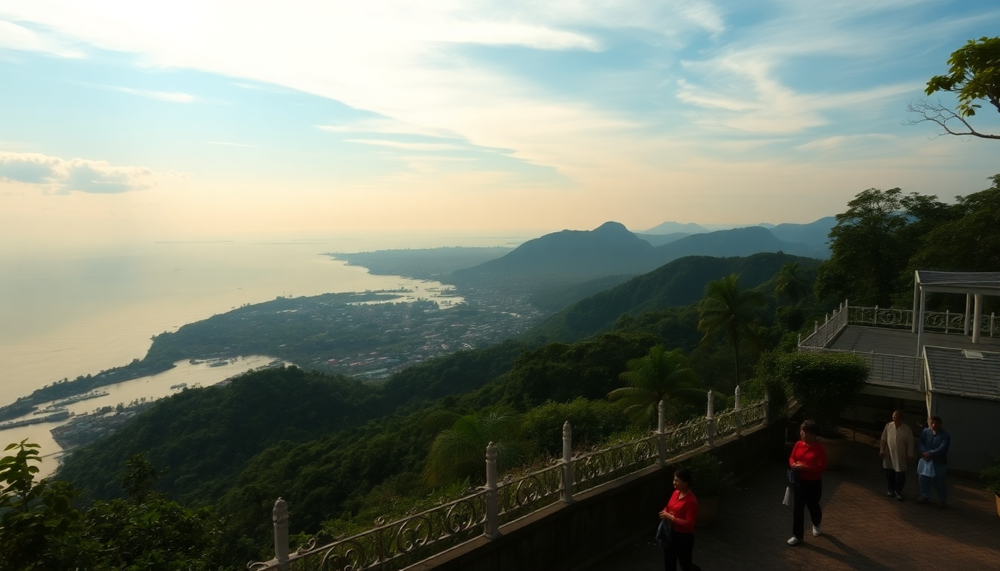

Best day trips from Jakarta: Bogor, Bandung, Thousand Islands

I’ve spent enough weekends stuck in Jakarta traffic to know that the city’s best asset is its exits. Three day-trip options sit within a few hours’ reach — each completely different, each with its own trade-offs. Here’s what I learned from actually doing all three.
Is Bogor worth the traffic from Jakarta?
Yes, but only if you go early. We rolled out of our hotel in Menteng at 6:30 AM and still hit stop-and-go on the Jagorawi toll road. The payoff is Kebun Raya Bogor (Bogor Botanical Gardens), which opens at 8:00 AM and is nearly empty before 10. The 87-hectare complex holds more than 15,000 species of tropical plants. We spent two hours just walking the main loop past the giant Amorphophallus titanum and the lotus pond near the Istana Bogor (the presidential palace, visible through the gates — you can’t go inside).
After the gardens, walk west to Soto Kuning Pak Haji Oding for a bowl of soto kuning — a rich, turmeric-colored soup with shredded chicken and rice cakes. It’s about 30,000 IDR ($2) and the queue moves fast.
- Getting there: Take the Kereta Commuter Indonesia (KRL) from Stasiun Juanda in Jakarta to Stasiun Bogor — 90 minutes, 8,000 IDR. Avoid driving on weekends.
- What to skip: The Kebun Raya Bogor tram tour (35,000 IDR) is narrated in Indonesian only and skips the best paths. Walk instead.
- Where to eat lunch: Rumah Makan Ampera on Jalan Dewi Sartika for nasi liwet (savory rice with chicken and tempeh) — 45,000 IDR per plate.
Traffic back to Jakarta after 3 PM is brutal — plan to leave Bogor by 2:30 or stay for dinner and leave after 7.
Is Bandung better for shopping or nature?
Bandung tries to be both, and it does neither perfectly. The factory outlets along Jalan Riau (like Heritage Factory Outlet and Rumah Mode) sell last-season branded clothes at 40-60% off retail — but the stock is hit-or-miss, and the crowds on weekends are exhausting. I found a decent North Face jacket for 250,000 IDR, but my partner left empty-handed.
For nature, Tangkuban Perahu (the volcano an hour north of the city) is accessible but underwhelming — you park, walk 200 meters to a crater rim, and smell sulfur while vendors sell you keychains. The better bet is Kawah Putih (White Crater Lake) near Ciwidey, about 90 minutes south. The milky turquoise water against the gray volcanic rock is genuinely striking, and the entrance fee is 50,000 IDR.
- Getting there: The Argo Parahyangan train from Gambir Station in Jakarta to Bandung Station takes 3 hours and costs 150,000-300,000 IDR. Book seats a week ahead — they sell out.
- Where to eat: Sate Maranggi Hj. Yeti in Sarijadi for grilled beef satay with ketan (sticky rice) — 25,000 IDR per portion.
- Where to stay (if overnighting): Hotel Indigo Bandung on Jalan Braga — modern, central, and the rooftop bar has a decent view of the city lights. Rooms from 800,000 IDR.
Bandung works best as a two-day trip. One day for shopping and eating in the city, one day for Kawah Putih or a hike at Curug Cimahi (a 90-meter waterfall with a 40-minute downhill trail). As a single day trip from Jakarta, you’ll spend more time on the road than at your destination.
What is the Thousand Islands actually like? (And which island should you pick?)
The Kepulauan Seribu (Thousand Islands) are a 45-minute speedboat ride from Marina Ancol in North Jakarta. There are about 110 islands, not a thousand, and most are privately owned resorts or uninhabited. I’ve been to three, and my honest take is that the experience depends entirely on which island you choose.
Pulau Ayer is the most accessible — a 45-minute ferry from Ancol, 150,000 IDR round trip. It has a swimming pool, a restaurant serving nasi goreng and fried fish, and basic cottages starting at 400,000 IDR per night. The water is murky near the jetty but clears up 50 meters offshore. Snorkeling gear rents for 50,000 IDR.
Pulau Macan is the splurge option — 2.5 hours by boat, 1.5 million IDR per person for a day trip including lunch and snorkeling. The coral is healthier here, and we saw clownfish and sea turtles in January. The resort runs on solar power and serves family-style Indonesian meals.
Pulau Tidung is the backpacker choice — 2 hours by ferry, 100,000 IDR entry. You can rent a bicycle (30,000 IDR per day) and ride across the island in 20 minutes. The long bridge connecting Tidung Besar to Tidung Kecil is a good sunset spot. Accommodation is basic (shared bathroom, no AC) but cheap: 200,000 IDR per night.
- Best for a day trip: Pulau Ayer. Easy logistics, decent snorkeling, and you’re back in Jakarta by 4 PM.
- Best for snorkeling: Pulau Macan or Pulau Pari (the latter has a coral nursery and fewer tourists).
- What to bring: Reef-safe sunscreen (local shops sell it on the islands for 3x the price), cash (no ATMs on most islands), and a dry bag for the boat ride.
When is the best time to go on each trip?
Dry season runs May to October. November to April brings daily afternoon rain, which can ruin a beach day but makes Bogor’s gardens look lush and Bandung’s volcanic craters less crowded.
- Bogor: June to August (driest months, but weekends are packed — go on a weekday).
- Bandung: April or September (shoulder months, fewer crowds at Kawah Putih).
- Thousand Islands: July to September (calm seas, visibility of 10-15 meters for snorkeling).
I made the mistake of visiting Pulau Ayer in January — the boat ride was choppy, the rain started at 2 PM, and the snorkeling visibility dropped to 3 meters. Don’t do it.
How do I get from Jakarta to these places without a car?
You don’t need a car for any of these trips. Jakarta’s traffic makes driving a liability.
- To Bogor: KRL commuter train from Stasiun Juanda or Stasiun Gondangdia — 8,000 IDR, 90 minutes. Trains run every 15-30 minutes from 5 AM to 10 PM.
- To Bandung: Train from Gambir Station — book through KAI Access app. The Argo Parahyangan is the best option (comfortable seats, AC, power outlets). Avoid the Ekonomi class trains — they’re slower and less comfortable.
- To Thousand Islands: Speedboat from Marina Ancol — book through Kepulauan Seribu tour operators at the dock or via WhatsApp. Expect to pay 150,000-300,000 IDR for a round-trip ticket depending on the island.
FAQ
Is Bogor worth visiting if I only have half a day? Yes, but skip the palace tour and focus on the botanical gardens. Arrive by 8 AM, walk the main paths for two hours, grab soto kuning nearby, and head back by noon. You’ll see the best parts without rushing.
Can I do Bandung as a day trip from Jakarta? Technically yes — take the 6 AM train from Gambir, arrive at 9 AM, spend the day shopping on Jalan Riau and eating satay, then catch the 6 PM train back. But you’ll miss Kawah Putih and the countryside. Two days is better.
Is the Thousand Islands safe for solo travelers? Yes, especially Pulau Ayer and Pulau Tidung, which have staff and other tourists. Bring your own lock for the cottage door, and avoid swimming alone far from the shore. The boat operators at Ancol are licensed and life jackets are provided.
Conclusion
- Bogor is the easiest day trip — take the train, see the gardens, eat soto, and be back by early afternoon.
- Bandung rewards an overnight stay — the shopping is decent, Kawah Putih is memorable, and the train is comfortable.
- Thousand Islands are best in dry season — pick Pulau Ayer for simplicity, Pulau Macan for quality snorkeling.
- Weekdays beat weekends for every destination. Traffic and crowds are the real obstacles.
- Cash and sunscreen are non-negotiable for the islands. The train is your best friend for Bogor and Bandung.